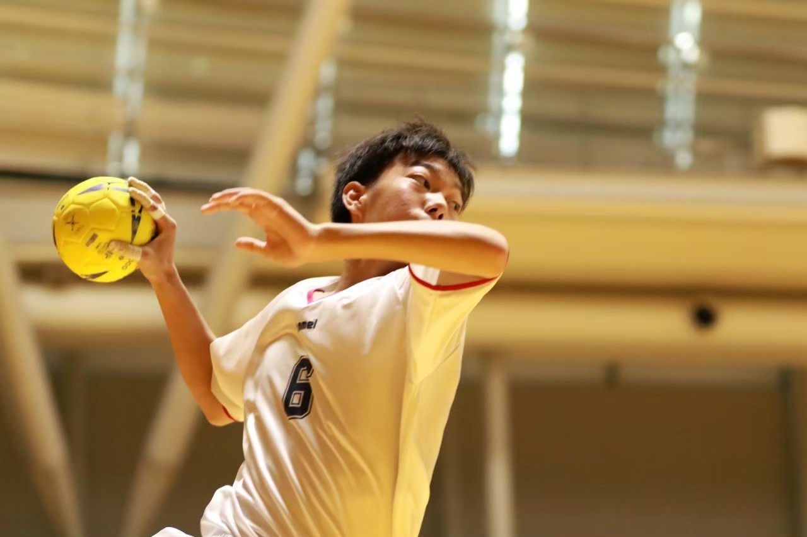
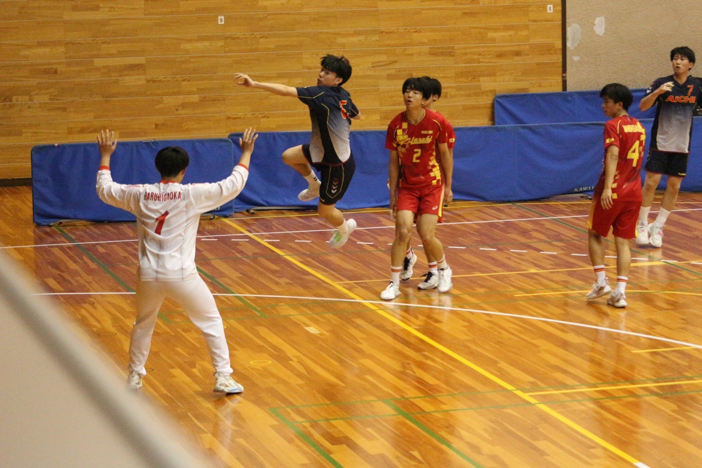
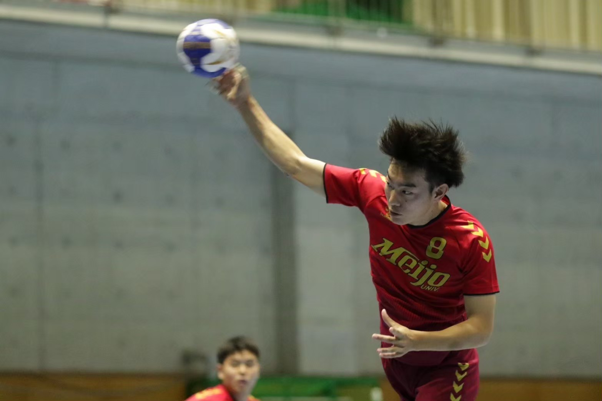

ハンドボール
ハンドボールの経歴について
小学校時代
先輩に誘われてハンドボールを始める。試合で点をたくさん決められたことがきっかけで夢中に。ポジションは右サイド。県大会で3位入賞。

中学校時代
扇台中学校で一個上の代で全国優勝 自身が2年の時に全国大会出場が決定したがコロナウイルスによりで全国大会が中止になってしまう。やり切れず強豪校に行く
高校時代
新人戦は県大会で優勝するも全国大会では初戦負け インターハイ予選は約10年ぶりの県ベスト4
大学時代
一年秋季リーグで優秀審判賞 2年春季リーグで最優秀審判賞取得
